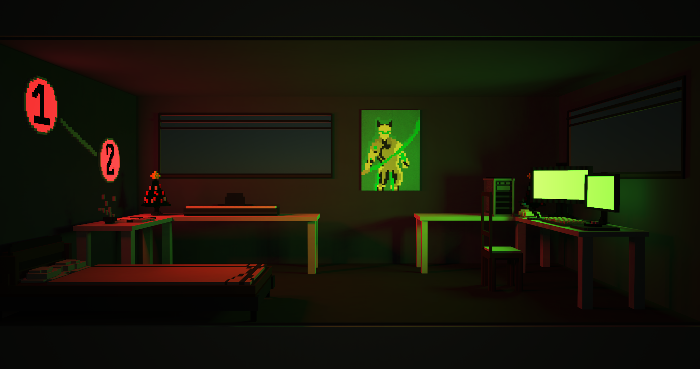

<div class="home">
  <body>

    <div id="twitch-channels">
        <!-- Add a placeholder for the Twitch embed -->
        <center><h1>some of my stuff</h1>
        
        
        <p></p>
        <button type="button" name="button" onclick="showYoutube()">My YouTube</button>
        <div id="youtube" style="display:none;">
          <script src="https://apis.google.com/js/platform.js"></script>

          <div class="g-ytsubscribe" data-channelid="UCf8XbvqxhaS_t9ThKRJds1Q" data-layout="default" data-theme="dark" data-count="default"></div>
        </div>
        </center>
        <script>
        function showYoutube() {
          var x = document.getElementById("youtube");
          if (x.style.display === "none") {
            x.style.display = "block";
          } else {
            x.style.display = "none";
          }
        }
        </script>
    </div>
  </body>
</div>
